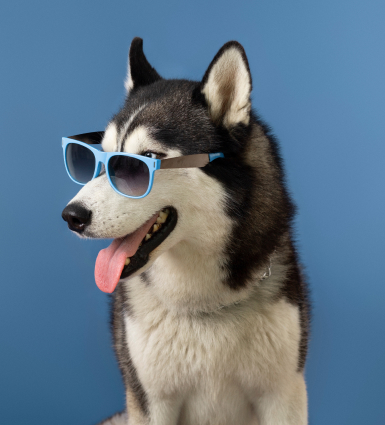

Ajudando você a encontrar seu pet ideal!
Nosso maior objetivo é ajudar a você a encontrar o pet que mais se encaixa com seu perfil, e claro a ajudar nossos amiguinhos a encontrar o melhor lar possível.



Selecione o tipo de perfil que mais se encaixa com o seu objetivo.
Na nossa plataforma seguimos pilares importantes!
A adoção de animais é uma oportunidade maravilhosa de ajudar um animal em necessidade e trazer alegria para um lar. No entanto, é importante lembrar que a adoção é uma responsabilidade séria e que os adotantes devem estar dispostos a cuidar de seus animais de estimação de maneira adequada e comprometida.
Ações sociais
Adoção responsável
Conciência ambiental
Conscientização